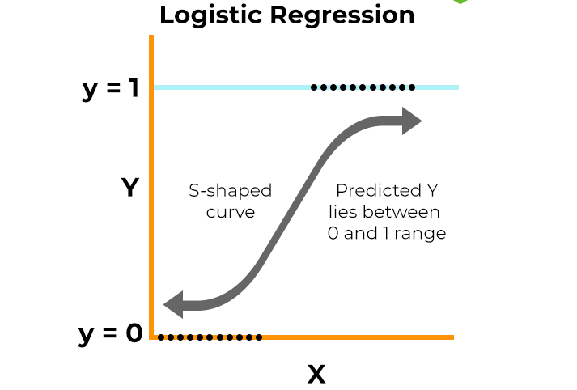

Banknotes Machine Learning Model
For this project, when we used our machine learning models, it was very important to us that we achieve high accuracy, and with the amount of machine learning models we were using, we wanted perfection. And perfection we got. Every single machine learning model that we developed showed us a 100% accuracy, which we find to be an extremely good score. This shows us that our dataset is extremely clean, well organized, and lacks any unnecessary numbers, meaning thats a job well done on our side.
Logistic Regression
Logistic Regression was developed and used to take in data and use that data to predict the output of future data. In our model, we used logistic regression to predict how many bills would be counterfeit and how many bills would be real.
Support Vector Machine (SVM/SVC)

We used SVM and SVC models to divide and classify the data we had. If you know about these models, you will know they are used to divide data into two different classes. Therefore we used this knowledge to use SVM/SVC to divide our data into whether it is counterfeit or not, henceforth helping us achieve our goal.
K-Nearest Neighbors (KNN)
A model that was used in our code was KNN. In 1951 the first prototype of the KNN was produced by Evelyn Fix, and Joseph Lawson Hodges Jr., two students that studied at Berkeley. The way KNN models work is that it calculates similarities using distance between two points on a graph. Some cons of KNN would it be when working with large data sets the information is not entirely accurate. Some Pros for KNN would be how the model does not learn anything in the training period. Some real life application for the KNN model would be categorizing products, an example of this would be separating vegetables with fruit .
Decision Tree
One of the other models we used is a Decision Tree. Created in 1963 at the University of Wisconsin-Madison, the decision tree was a model created to function using supervised machine learning. A decision tree starts at a single node, and goes on to split out into two or more directions. Each branch is a different outcome, and it continues to split until a final outcome is achieved. One of the best examples of this model is buying something online from somewhere that gives you different suggestions based off your search history and previous shopping history.
Random Forest

In our project, we also used Random Forest. Random Forest was invented by Leo Briemann and Adele Cutler in 2001. The algorithm works by constructing multiple decision trees and outputting the mean/mode of prediction of the trees. One pro of Random Forest is that you can get a very accurate classification from using it. It’s also able to handle large datasets, and it prevents overfitting. On the other hand, Random Forests are not easily interpretable.
Boosting
.png)
In the Fake Bank Notes Detection project, we will explore 7 different models, two of which are Gradient Boosting & XG Boosting. Gradient boosting was an idea initially brought up in the 1990s in response to Kearns and Valiant’s question, "Can a set of weak learners create a single strong learner?". This effective method of machine learning was popularized with the recent invention of XG Boosting. The way that boosting works is by running multiple weak classifiers in sequential order. Once one of the classifiers computes an output the model will calculate the error and then run it through the next classifier. The model repeat this cycle until it is directed to stop by the model parameters. This will allow it to potentially come up with very refined and accurate outputs. This is unlike bagging when it will run multiple different models simultaneously and have them vote on which is the correct output. Boosting has a high accuracy without the need of much hyper tuning. Regardless, it comes at the expense of having a very high power consumption rate and is computationally expensive. This causes the model to have a tendency to take time and not be the most efficient way of machine learning.